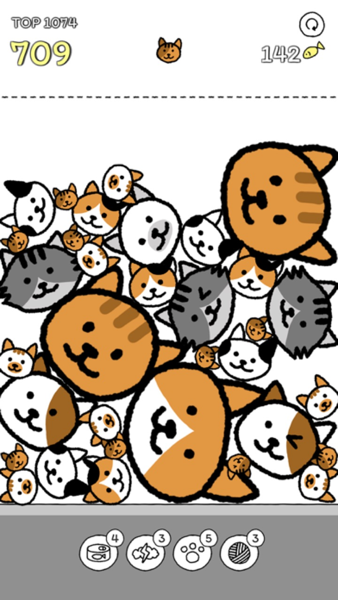

★4.8
Nota en App Store


Deja caer gatos iguales para fusionarlos en más grandes — y ese ¡pop! también hace estallar tu estrés


★4.8 · 10.000+ valoraciones en el mundo · Gratis
+=


Cuando dos gatos iguales se encuentran, nace el siguiente. Estos son los 11 reales del juego.
¿Y cuando por fin se encuentran dos de los gatos más grandes…? Compruébalo tú mismo 🎆

Una sola regla: los gatos iguales se fusionan en uno más grande. Pero esas orejitas hacen que cada caída ruede de forma impredecible — por eso siempre dices «una más». ¿El ¡pop! y la vibración al estallar? Pura serotonina.
Del Clásico relajado al Speed frenético, la contrarreloj de 5 minutos y la Carrera a 1000. Cada modo tiene su propio ranking global — persigue el récord de hoy.

Ponles gafas, sombreros y lazos a tus gatos, y cambia el tema del tablero a tu gusto. Anuncios solo si tú quieres — y funciona sin conexión, donde sea.
Publicadas de verdad en el App Store

"Este juego es súper entretenido, siento que me parece un desafío tener que desbloquear los niveles según a la medida que juegas."

"Es un juego muy divertido y te ayuda a pensar en tu siguiente jugada"

"muy lindo!!"
Del estudio detrás de Cats are Cute (★4.9 · 71.000+ reseñas)


Gratis en iOS y Android